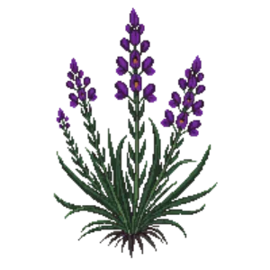

Perennial Wallflower 'Bowles's Mauve'
Erysimum 'Bowles's Mauve'

Perennial Wallflower 'Bowles's Mauve' is a perennial for edging, mid-border, suited to full sun and loam, sandy soil or chalk, flowering Mar, Apr, May, Jun, Jul, Aug, Sep, Oct.
| Type | Perennial |
|---|---|
| Mature height | 75 cm |
| Spread | 60 cm |
| Aspect | full sun |
| Foliage | Evergreen |
| Hardiness | USDA 6a-10a, RHS H4 |
| Pollinator-friendly | Yes |
| Pet-safe | No |
Where to use it in a border
At around 75 cm, it sits best along the front edge, where a low, spreading habit reads best. Give it about 60 cm of room to spread. It is hardy across USDA zones 6a to 10a and rated H4 by the RHS, so check it suits your area before planting.
It appears in our lists of full sun, sandy soil, chalk soil, evergreen plants, pollinator-friendly plants.
Flowering through the year
Worth knowing
- Evergreen, so it keeps the border furnished through winter.
- Not recorded as pet-safe; site it away from pets that graze if that matters to you.
- Its flowers are valued by bees and other pollinators.
Good companions
Plants that share its conditions and style, chosen to complement its place in the border:
- Mexican Fleabaneto edge in front
- Rosemaryas a partner at the same level
- Thriftto edge in front
- Compact Strawberry Treefor height behind it
- Guernsey Lilyto edge in front
- Lavender 'Hidcote'to edge in front
Garden styles
Coastal Cottage garden Mediterranean Wildlife garden
See Perennial Wallflower 'Bowles's Mauve' set in a full border, with spacing and companions worked out for your own conditions, in Border Builder.
Sources
Bloom timing and hardiness drawn from:
- MoBot Plant Finder (missouribotanicalgarden.org, 2026-05)
- NC State Extension (plants.ces.ncsu.edu, 2026-05)
- RHS (rhs.org.uk, 2026-05)